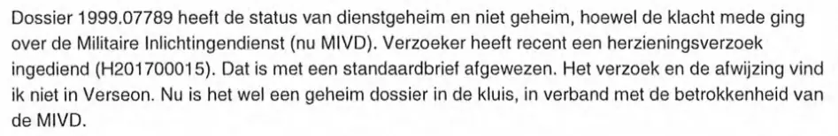
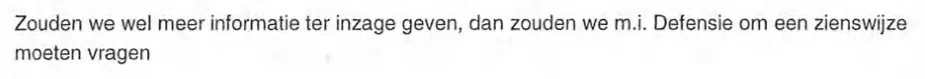

Prueba · Nota
Defensor del Pueblo de los Países Bajos sobre el expediente Giltay, 18 de mayo de 2017
La sección de voces cita dos afirmaciones de esta nota: que el expediente es un expediente secreto en la caja fuerte y que habría que consultar a Defensa si se diera acceso a más información. Ambos pasajes figuran a continuación en el orden de la nota.
Un expediente secreto en la caja fuerte
«El expediente 1999.07789 tiene la clasificación de secreto de servicio y no de secreto, aunque la queja se refería también al Servicio de Inteligencia Militar (ahora MIVD). El solicitante ha presentado recientemente una solicitud de revisión (H201700015). Se rechazó con una carta estándar. No encuentro la solicitud ni el rechazo en Verseon. Ahora sí es un expediente secreto en la caja fuerte, debido a la implicación del MIVD». Página 1, el párrafo que empieza con «Dossier 1999.07789 heeft de status». Verseon es el sistema digital en el que la oficina del Defensor del Pueblo registra su correspondencia, sus casos y sus expedientes. Traducido del neerlandés; el texto original figura a continuación.
“Dossier 1999.07789 heeft de status van dienstgeheim en niet geheim, hoewel de klacht mede ging over de Militaire Inlichtingendienst (nu MIVD). Verzoeker heeft recent een herzieningsverzoek ingediend (H201700015). Dat is met een standaardbrief afgewezen. Het verzoek en de afwijzing vind ik niet in Verseon. Nu is het wel een geheim dossier in de kluis, in verband met de betrokkenheid van de MIVD.” Texto original

Habría que consultar a Defensa
«Si, aun así, diéramos acceso a más información, en mi opinión tendríamos que pedir su parecer a Defensa». Página 2, el párrafo que empieza con «Zouden we wel meer informatie». La frase no lleva punto final en la nota. Traducido del neerlandés; el texto original figura a continuación.
“Zouden we wel meer informatie ter inzage geven, dan zouden we m.i. Defensie om een zienswijze moeten vragen” Texto original

Por qué importa este documento
En esta nota interna del 18 de mayo de 2017, un empleado del Defensor del Pueblo de los Países Bajos (Nationale ombudsman) escribe que el expediente de Giltay es formalmente secreto de servicio, pero que, aun así, está guardado como «expediente secreto en la caja fuerte», «debido a la implicación del MIVD» (Servicio de Inteligencia y Seguridad Militar). El ensayo sostiene que el Defensor del Pueblo lo había guardado literalmente «en la caja fuerte». El empleado no encuentra en Verseon, el sistema de registro de la oficina, la solicitud de revisión de Giltay de enero de 2017 ni su rechazo. La misma nota sopesa si puede mostrarse una parte mayor del expediente, y el empleado considera que en ese caso habría que pedir primero su parecer al Ministerio de Defensa.
Procedencia
- Documento
- Nota interna
- Remitente
- Un empleado de la oficina del Defensor del Pueblo, cuyo nombre está tachado en el documento
- Destinatario
- Un colega de la misma oficina, identificado solo por sus iniciales
- Expediente
- 1999.07789, a nombre de E.F. Giltay
- Fecha
- 18 de mayo de 2017
- Asunto
- «Verzoek om inzage» (solicitud de acceso)
- Referencias
- Informe público 99/507; solicitud de revisión H201700015 (carta de Giltay del 30 de enero de 2017 en la que pide la retirada de ese informe, rechazada el 7 de marzo de 2017); ECLI:NL:RBDHA:2015:15050; ECLI:NL:GHDHA:2016:870
- Marca
- DOC 27, en letras rojas en la esquina superior derecha de la página 1
- Idioma
- Neerlandés
- Páginas
- 2
- Conservado por
- Defensor del Pueblo de los Países Bajos
- Véase también
- Defensor del Pueblo de los Países Bajos a Giltay, 7 de marzo de 2017
Citado en:
- el ensayo «La prohibición cayó, el libro quedó en pie» en el capítulo (9) «Registrado para siempre» y en la diapositiva «Tribunal de Distrito de La Haya · 2023» de la presentación «La historia en el mapa»
- la sección de voces bajo el epígrafe «Nuevo avance».
Documento: https://
Modificado por última vez el 13 de septiembre de 2026, consultado el 27 de noviembre de 2026.

Esta página es una ficha de prueba del libro El general del encubrimiento de Edwin Giltay y del sitio web que lo acompaña.